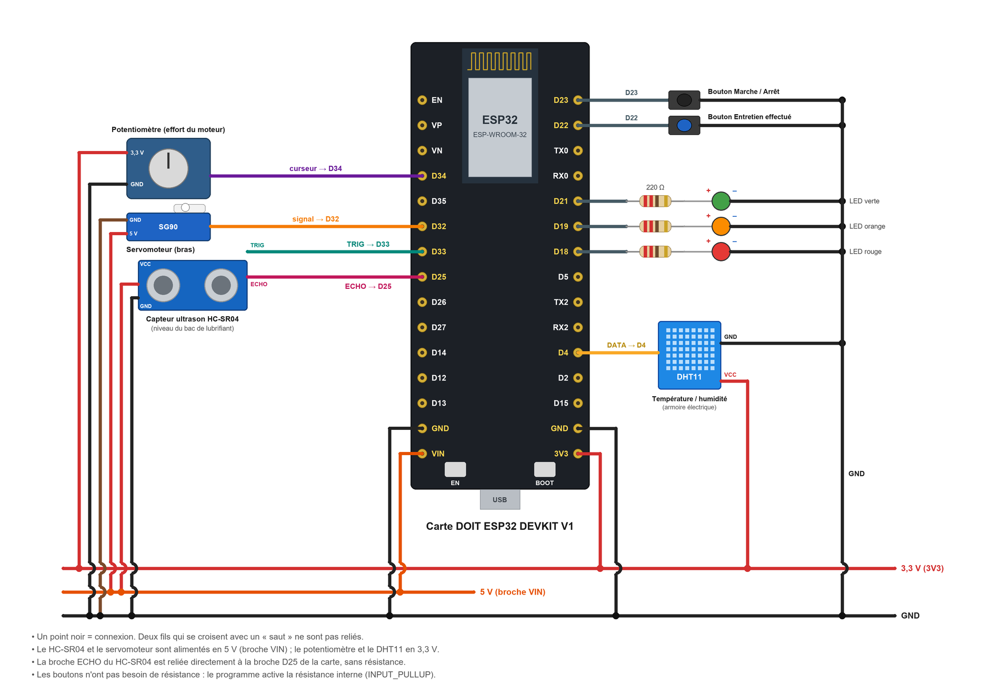

Travaux pratiques — IoT · 08
Un bras motorisé surveillé par un potentiomètre, un capteur ultrason et un DHT11 : compteur de cycles, seuils d'alerte et d'alarme, arrêt automatique et page web.
On simule un poste automatisé : un bras manipule des pièces en continu. Son mécanisme doit être lubrifié, son moteur ne doit pas forcer, et son armoire électrique doit rester sèche et pas trop chaude. Chaque composant joue un rôle :
Composant | Ce qu'il représente | Type de maintenance | Seuils (alerte / alarme) |
|---|---|---|---|
Servomoteur SG90 | Le bras de la machine, qui fait des cycles | Systématique : entretien tous les 50 cycles | 40 cycles / 50 cycles |
Potentiomètre | L'effort du moteur (il augmente si le mécanisme s'use ou se grippe) | Conditionnelle | 60 % / 85 % |
Capteur ultrason HC-SR04 | Le niveau du bac de lubrifiant (distance entre le capteur et la surface) | Conditionnelle | 30 % / 10 % (niveau bas) |
Capteur DHT11 | La température et l'humidité de l'armoire électrique | Conditionnelle | 30 °C / 40 °C ; humidité : alerte à 80 % |
Bouton noir | Marche / arrêt de la machine | ||
Bouton bleu | « Entretien effectué » : remet le compteur de cycles à zéro | ||
3 LED | État de la machine : vert = normal, orange = alerte, rouge = alarme |
Règles de fonctionnement
Matériel | Remarque |
|---|---|
1 carte DOIT ESP32 DEVKIT V1 + câble micro-USB | |
1 servomoteur SG90 | Alimenté en 5 V (broche VIN) |
1 potentiomètre | 10 kΩ par exemple |
1 capteur ultrason HC-SR04 | Alimenté en 5 V |
1 capteur DHT11 (module 3 broches) | Un DHT11 nu à 4 broches demande en plus une résistance de 10 kΩ entre DATA et VCC |
2 boutons poussoirs | Pas de résistance nécessaire |
3 LED (verte, orange, rouge) + 3 résistances de 220 Ω | |
1 résistance de 1 kΩ + 1 résistance de 2 kΩ | Pont diviseur pour la broche ECHO (2 kΩ = deux résistances de 1 kΩ en série) |
1 ou 2 plaques d'essai + fils de connexion | |
1 morceau de carton | Simule la surface du lubrifiant devant le capteur ultrason |

Composant | Broche du composant | Relier à |
|---|---|---|
Potentiomètre | Broche extrême / curseur (milieu) / autre broche extrême | 3V3 / D34 / GND |
Servomoteur SG90 | Fil marron / rouge / orange | GND / VIN (5 V) / D32 |
HC-SR04 | VCC / GND | VIN (5 V) / GND |
HC-SR04 | TRIG | D33 |
HC-SR04 | ECHO | résistance 1 kΩ → D25, et résistance 2 kΩ entre D25 et GND |
DHT11 | VCC / DATA / GND | 3V3 / D4 / GND |
Bouton Marche / Arrêt | une patte / l'autre patte | D23 / GND |
Bouton Entretien effectué | une patte / l'autre patte | D22 / GND |
LED verte, orange, rouge | patte longue (+) via 220 Ω / patte courte (–) | D21, D19, D18 / GND |
Attention
Le programme complet est fourni : dossier ESP32_Maintenance_Machine (fichier ESP32_Maintenance_Machine.ino, reproduit en annexe).
ESP32Servo et DHT sensor library (Outils > Gérer les bibliothèques).ssid, password).DOIT ESP32 DEVKIT V1 et le port, puis téléversez.115200 bauds) et notez l'adresse IP. Ouvrez la page http://<adresse IP> sur un téléphone connecté au même Wi-Fi.Notez sur votre feuille l'adresse IP de la carte (par exemple 192.168.1.42) : vous en aurez besoin pour ouvrir la page.
Ce que fait le programme :
/data donne les données brutes (JSON).Remarque : la chaleur des doigts ne suffit pas pour atteindre 40 °C. Pour tester l'alarme, on peut baisser le seuil TEMP_ALARME dans le programme.
Scénario | Indicateur | Valeur au passage à l'orange | Valeur au passage au rouge | La machine s'arrête-t-elle ? |
|---|---|---|---|---|
B | Cycles | |||
C | Effort (%) | |||
D | Niveau (%) | |||
E | Température / humidité |
// Activité IoT - Maintenance préventive d'une machine pédagogique
// Carte : DOIT ESP32 DEVKIT V1
//
// La machine : un bras (servomoteur SG90) qui fait des cycles, avec :
// - un compteur de cycles -> maintenance préventive SYSTÉMATIQUE
// - l'effort du moteur (potentiomètre), le niveau du bac de lubrifiant (HC-SR04),
// la température et l'humidité de l'armoire (DHT11) -> maintenance préventive CONDITIONNELLE
// - 3 LED d'état, 2 boutons (marche/arrêt, entretien effectué), une page web
//
// Bibliothèques à installer (Outils > Gérer les bibliothèques) :
// - ESP32Servo (Kevin Harrington)
// - DHT sensor library (Adafruit) + Adafruit Unified Sensor
#include <WiFi.h>
#include <WebServer.h>
#include <ESP32Servo.h>
#include <DHT.h>
const char* ssid = "NOM_DU_RESEAU"; // nom du réseau Wi-Fi (2,4 GHz)
const char* password = "MOT_DE_PASSE"; // mot de passe du réseau Wi-Fi
// ---------- Broches
const int PIN_POT = 34; // potentiomètre (entrée analogique compatible Wi-Fi)
const int PIN_SERVO = 32; // servomoteur SG90 (signal)
const int PIN_TRIG = 33; // HC-SR04 TRIG
const int PIN_ECHO = 25; // HC-SR04 ECHO (via pont diviseur 1 kΩ / 2 kΩ)
const int PIN_DHT = 4; // DHT11 DATA
const int BTN_MARCHE = 23; // bouton marche / arrêt
const int BTN_ENTRETIEN = 22; // bouton "entretien effectué"
const int LED_VERTE = 21;
const int LED_ORANGE = 19;
const int LED_ROUGE = 18;
// ---------- Seuils de maintenance (à adapter)
const int CYCLES_PREVENIR = 40; // alerte : entretien à prévoir
const int CYCLES_ENTRETIEN = 50; // alarme : entretien obligatoire (systématique)
const int EFFORT_ALERTE = 60; // % d'effort du moteur
const int EFFORT_ALARME = 85;
const int NIVEAU_ALERTE = 30; // % de lubrifiant dans le bac
const int NIVEAU_ALARME = 10;
const float TEMP_ALERTE = 30.0; // °C dans l'armoire électrique
const float TEMP_ALARME = 40.0;
const float HUM_ALERTE = 80.0; // % d'humidité (alerte seulement)
// ---------- Bac de lubrifiant : distance mesurée par le capteur placé au-dessus
const float DIST_PLEIN = 5.0; // cm quand le bac est plein
const float DIST_VIDE = 20.0; // cm quand le bac est vide
Servo bras;
DHT dht(PIN_DHT, DHT11);
WebServer server(80);
// ---------- Variables de la machine
bool enMarche = false;
bool brasLeve = false;
int cycles = 0; // cycles depuis le dernier entretien
long cyclesTotal = 0; // cycles depuis la mise en service
int effort = 0; // %
int niveau = 100; // %
float distance = 0; // cm
float temperature = NAN; // °C
float humidite = NAN; // %
// État de chaque indicateur : 0 = normal, 1 = alerte, 2 = alarme
int eCycles = 0, eEffort = 0, eNiveau = 0, eTemp = 0, eHum = 0;
int etat = 0;
String cause = "";
const char* NOM_ETAT[] = {"NORMAL", "ALERTE", "ALARME"};
const char* COULEUR[] = {"#2e7d32", "#ef6c00", "#c62828"};
unsigned long tServo = 0, tMesure = 0, tDht = 0, tBouton = 0;
int dernierMarche = HIGH, dernierEntretien = HIGH;
// ---------- Mesures
float mesurerDistance() {
digitalWrite(PIN_TRIG, LOW);
delayMicroseconds(2);
digitalWrite(PIN_TRIG, HIGH); // impulsion de 10 µs
delayMicroseconds(10);
digitalWrite(PIN_TRIG, LOW);
unsigned long duree = pulseIn(PIN_ECHO, HIGH, 30000); // attente max 30 ms
if (duree == 0) return -1; // pas d'écho
return duree * 0.0343 / 2; // vitesse du son : 343 m/s, aller-retour
}
int etatHaut(float v, float alerte, float alarme) { // plus la valeur est haute, plus c'est grave
if (v >= alarme) return 2;
if (v >= alerte) return 1;
return 0;
}
// ---------- Décision
void evaluer() {
eCycles = etatHaut(cycles, CYCLES_PREVENIR, CYCLES_ENTRETIEN);
eEffort = etatHaut(effort, EFFORT_ALERTE, EFFORT_ALARME);
eNiveau = (niveau <= NIVEAU_ALARME) ? 2 : (niveau <= NIVEAU_ALERTE) ? 1 : 0;
eTemp = isnan(temperature) ? 0 : etatHaut(temperature, TEMP_ALERTE, TEMP_ALARME);
eHum = (!isnan(humidite) && humidite >= HUM_ALERTE) ? 1 : 0;
etat = max(max(max(eCycles, eEffort), max(eNiveau, eTemp)), eHum);
cause = "";
if (eCycles) cause += "entretien périodique ; ";
if (eEffort) cause += "effort du moteur ; ";
if (eNiveau) cause += "niveau de lubrifiant ; ";
if (eTemp) cause += "température de l'armoire ; ";
if (eHum) cause += "humidité de l'armoire ; ";
// Sécurité : en alarme, la machine s'arrête automatiquement
if (etat == 2 && enMarche) {
enMarche = false;
Serial.println("ARRET AUTOMATIQUE : " + cause);
}
digitalWrite(LED_VERTE, etat == 0);
digitalWrite(LED_ORANGE, etat == 1);
digitalWrite(LED_ROUGE, etat == 2);
}
// ---------- Boutons (appui = niveau bas, grâce à INPUT_PULLUP)
void lireBoutons() {
int m = digitalRead(BTN_MARCHE);
int e = digitalRead(BTN_ENTRETIEN);
if (millis() - tBouton > 200) { // anti-rebond
if (m == LOW && dernierMarche == HIGH) {
tBouton = millis();
if (enMarche) {
enMarche = false;
Serial.println("Machine arrêtée par l'opérateur");
} else if (etat == 2) {
Serial.println("Démarrage refusé : alarme en cours (" + cause + ")");
} else {
enMarche = true;
Serial.println("Machine en marche");
}
}
if (e == LOW && dernierEntretien == HIGH) {
tBouton = millis();
cycles = 0;
Serial.println("Entretien effectué : compteur de cycles remis à zéro");
evaluer();
}
}
dernierMarche = m;
dernierEntretien = e;
}
// ---------- Page web (actualisée toutes les 2 secondes)
void ligne(String &html, const char* nom, String valeur, String seuils, int e) {
html += "<tr><td>"; html += nom; html += "</td><td><b>"; html += valeur;
html += "</b></td><td>"; html += seuils; html += "</td><td style='color:white;background:";
html += COULEUR[e]; html += "'>"; html += NOM_ETAT[e]; html += "</td></tr>";
}
String page() {
String html = "<!DOCTYPE html><html><head><meta charset='utf-8'>";
html += "<meta name='viewport' content='width=device-width'>";
html += "<meta http-equiv='refresh' content='2'><title>Maintenance machine</title>";
html += "<style>body{font-family:sans-serif;max-width:560px;margin:auto;padding:8px}";
html += "table{border-collapse:collapse;width:100%}td{border:1px solid #ccc;padding:6px}</style></head><body>";
html += "<h1>Machine : ";
html += enMarche ? "EN MARCHE" : "ARRÊTÉE";
html += "</h1><p style='font-size:1.4em;color:white;padding:10px;border-radius:8px;background:";
html += COULEUR[etat]; html += "'>État : "; html += NOM_ETAT[etat]; html += "</p>";
if (etat > 0) { html += "<p>Cause : "; html += cause; html += "</p>"; }
html += "<table><tr><td>Indicateur</td><td>Valeur</td><td>Seuils</td><td>État</td></tr>";
ligne(html, "Cycles depuis l'entretien", String(cycles),
"alerte " + String(CYCLES_PREVENIR) + ", entretien " + String(CYCLES_ENTRETIEN), eCycles);
ligne(html, "Effort du moteur", String(effort) + " %",
String(EFFORT_ALERTE) + " % / " + String(EFFORT_ALARME) + " %", eEffort);
ligne(html, "Niveau de lubrifiant", String(niveau) + " %",
String(NIVEAU_ALERTE) + " % / " + String(NIVEAU_ALARME) + " %", eNiveau);
ligne(html, "Température armoire", isnan(temperature) ? String("—") : String(temperature, 0) + " °C",
String(TEMP_ALERTE, 0) + " °C / " + String(TEMP_ALARME, 0) + " °C", eTemp);
ligne(html, "Humidité armoire", isnan(humidite) ? String("—") : String(humidite, 0) + " %",
String(HUM_ALERTE, 0) + " %", eHum);
html += "</table><p>Cycles depuis la mise en service : ";
html += String(cyclesTotal);
html += "</p></body></html>";
return html;
}
void handleRoot() {
server.send(200, "text/html; charset=utf-8", page());
}
// Données brutes au format JSON (pour un tableau de bord ou un tableur)
void handleData() {
String json = "{\"marche\":"; json += enMarche ? "true" : "false";
json += ",\"cycles\":" + String(cycles) + ",\"cyclesTotal\":" + String(cyclesTotal);
json += ",\"effort\":" + String(effort) + ",\"niveau\":" + String(niveau);
json += ",\"temperature\":" + (isnan(temperature) ? String("null") : String(temperature, 1));
json += ",\"humidite\":" + (isnan(humidite) ? String("null") : String(humidite, 0));
json += ",\"etat\":\""; json += NOM_ETAT[etat]; json += "\"}";
server.send(200, "application/json", json);
}
void setup() {
Serial.begin(115200);
pinMode(LED_VERTE, OUTPUT);
pinMode(LED_ORANGE, OUTPUT);
pinMode(LED_ROUGE, OUTPUT);
pinMode(BTN_MARCHE, INPUT_PULLUP);
pinMode(BTN_ENTRETIEN, INPUT_PULLUP);
pinMode(PIN_TRIG, OUTPUT);
pinMode(PIN_ECHO, INPUT);
bras.setPeriodHertz(50); // servomoteur : signal à 50 Hz
bras.attach(PIN_SERVO, 500, 2400);
bras.write(0); // bras en position basse
dht.begin();
WiFi.begin(ssid, password);
Serial.print("Connexion au Wi-Fi");
while (WiFi.status() != WL_CONNECTED) {
delay(500);
Serial.print(".");
}
Serial.println();
Serial.print("Adresse IP : ");
Serial.println(WiFi.localIP());
server.on("/", handleRoot);
server.on("/data", handleData);
server.begin();
}
void loop() {
server.handleClient();
lireBoutons();
// Mesures rapides toutes les 200 ms : effort et niveau
if (millis() - tMesure >= 200) {
tMesure = millis();
effort = map(analogRead(PIN_POT), 0, 4095, 0, 100);
float d = mesurerDistance();
if (d > 0) {
distance = d;
niveau = constrain((int)((DIST_VIDE - d) / (DIST_VIDE - DIST_PLEIN) * 100), 0, 100);
}
evaluer();
}
// Température et humidité toutes les 2 s (le DHT11 est lent)
if (millis() - tDht >= 2000) {
tDht = millis();
float t = dht.readTemperature();
float h = dht.readHumidity();
if (!isnan(t)) temperature = t;
if (!isnan(h)) humidite = h;
Serial.print("Etat:"); Serial.print(etat);
Serial.print(" Cycles:"); Serial.print(cycles);
Serial.print(" Effort:"); Serial.print(effort);
Serial.print(" Niveau:"); Serial.print(niveau);
Serial.print(" Temperature:"); Serial.print(temperature);
Serial.print(" Humidite:"); Serial.println(humidite);
}
// Le bras fait un cycle (monter puis descendre) toutes les 1,5 s quand la machine est en marche
if (enMarche && millis() - tServo >= 750) {
tServo = millis();
brasLeve = !brasLeve;
bras.write(brasLeve ? 90 : 0);
if (!brasLeve) { // retour en bas = un cycle terminé
cycles++;
cyclesTotal++;
}
}
}Couleurs de l'Arduino IDE : orange = fonctions d'Arduino et des bibliothèques, bleu-vert = types et constantes, vert olive = structure du programme, gris = commentaires. Les noms en noir sont choisis par le programmeur.